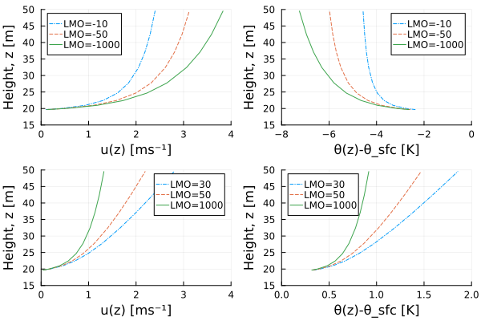

Surface Fluxes
Monin-Obukhov Similarity Theory (MOST)
Surface fluxes of momentum, energy and moisture are computed using the Monin-Obukhov Similarity Theory (MOST), which follows from dimensional analysis and similarity laws in stratified boundary layers. The theory gives the fluxes in an unresolved surface layer based on the self-similarity of stratified boundary layers, and can be used to compute exchange coefficients for bulk-formulae for the fluxes at the bottom boundary in simulations of the atmosphere. The MOST similarity profiles depend on one length scale, given by the ratio of velocity and buoyancy scales and known as the Obukhov length:
\[\begin{equation} \label{eq:monin_obukhov_length} L_O = \frac{u_{\star}^2 }{\kappa b_{\star}}. \end{equation}\]
Here, ${\star}$ subscripts indicate a characteristic physical scale of the variable in question in the surface layer. The buoyancy ($b$) is defined as
\[\begin{equation} b = g \frac{\mathrm{DSE}_v'}{\mathrm{DSE}_v}, \end{equation}\]
with $\mathrm{DSE}_v'$ as the perturbation from a reference virtual dry static energy value, $\mathrm{DSE}_{v}$. These mean and perturbation quantities are implicit in the model and can be used to compute the relation between $b_{\star}$ and $\phi_{\star}$, where $\phi$ represents a thermoynamic scale variable. Following equations (8) and (9) in [1] we write the physical scale for such a variable $\phi$ as:
\[\begin{equation} \label{eq:thermodynamic_scale} \phi_{\star} = \frac{\kappa / Pr}{F_h(\Delta z,z_{0\phi}, L_O)} \Delta \phi, \end{equation}\]
and a corresponding momentum scale is given by:
\[\begin{equation} \label{eq:u_star} u_{\star} = \frac{\kappa}{F_m(\Delta z,z_{0m}, L_O)} \Delta u. \end{equation}\]
Here $\kappa = 0.4$ is the von-Karman constant, $Pr$ is the Prandtl number and $\Delta$ corresponds to the difference in values between the two input heights (i.e. $\Delta u = u(z_{in}) - u(z_{srf})$). The formulation of $F_m$ and $F_h$ is subjective to the choice of discretization as shown in [1]. In the typical finite-difference form:
\[\begin{equation} F_h^{(FD)} = \log \left(\frac{\Delta z}{z_{0b}} \right) - \psi_h \left(\frac{\Delta z}{L_O} \right) + \psi_h \left(\frac{z_{0b}}{L_O} \right), \end{equation}\]
and
\[\begin{equation} F_m^{(FD)} = \log \left(\frac{\Delta z}{z_{0m}} \right) - \psi_m \left(\frac{\Delta z}{L_O} \right) + \psi_m \left(\frac{z_{0m}}{L_O} \right). \end{equation}\]
Subscripts $h, m$ are used to represent the equations corresponding to the exchange of heat and momentum respectively. The characteristics of tracer diffusion are assumed to be identical to those of the thermal diffusion in this system. The expressions for $\psi_m$ and $\psi_h$ are defined in appendix A in [1] for various universal functions. Our current approach uses the Businger universal functions by default.
The correction for the finite volume form $F_h, F_m$ are given respectively as:
\[\begin{equation} F_h^{(FV)} = \log \left(\frac{\Delta z}{z_{0b}} \right) - \Psi_h \left(\frac{\Delta z}{L_O} \right) + \frac{z_{0b}}{\Delta z} \Psi_h \left(\frac{z_{0b}}{L_O} \right) + R_{z0h}\left[\Psi_h \left(\frac{z_{0b}}{L_O} \right) - 1\right] \end{equation}\]
and
\[\begin{equation} F_m^{(FV)} = \log \left(\frac{\Delta z}{z_{0m}} \right) - \Psi_m \left(\frac{\Delta z}{L_O} \right) + \frac{z_{0m}}{\Delta z} \Psi_m \left(\frac{z_{0m}}{L_O} \right) + R_{z0m}\left[\Psi_m \left(\frac{z_{0m}}{L_O} \right) - 1\right], \end{equation}\]
with $\Psi_m$ and $\Psi_h$ as the FV corrected form. Their expressions are found in appendix A in [1] and here as well we use the Businger universal functions formulation as a default.
Note that both $F_h$ and $F_m$ (for FV and FD) are functions of known parameters ($z_{0b}, z_{0m}, \Delta z$) and $L_O$ only. Furthermore we can compute $b_{\star}$ from the known thermodynamic states. This fact makes (1) a transcendental equation with $L_O$ as the only unknown. A numerical solver that iterate over $L_O$ can thus find the value for which the error in (1) is smaller than some desired tolerance.
The most direct computation of $b_{\star}$ follows by writing (3) for virtual dry static energy and multiplying by a $(g/\mathrm{DSE}_v)$ factor:
\[\begin{equation} b_{\star} = \frac{g}{ \mathrm{DSE}_v }\frac{\kappa / Pr}{F_h(z,z_{0b}, L_O)} \Delta \mathrm{DSE}_v, \end{equation}\]
with $\Delta \mathrm{DSE}_v$ computed from the thermodynamic states at the corresponding levels. This approach forces us to assume that the various scalars that take part in the virtual dry static energy has the same roughness length $z_{0b}$ but provides a straightforward implementation where any tracer (humidity or other) which plays a role in the virtual dry static energy of air is accounted for in the computation of $L_O$.
An alternative method common in atmospheric models, is to write $b_{\star}$ using the definition of virtual potential temperature as:
\[\begin{equation} b_{\star} = (1+(\epsilon_{dv}-1) q_t ) \theta_{\star} + (\epsilon_{dv}-1) \theta q_{t,\star}, \end{equation}\]
with $\theta_{\star}$ and $q_{t,\star}$ given by (3). Here separate roughness lengths can be assumed for heat and humidity but the implementation would have to change if any additional scalar is added to the air density. For these reasons we implement (10).
The flux from the top of the boundary layer is given by:
\[\begin{equation} \overline{w'u'} = - u_{\star}^2, \end{equation}\]
\[\begin{equation} \overline{w'\phi'} = - u_{\star} \phi_{\star}, \end{equation}\]
which could be viewed as alternatives to bulk formula expressions for the sensible and latent heat fluxes if the physical scales are known. Correspondingly, the ratios between the physical scale and its change in the surface layer provides and expression for the exchange coefficient:
\[\begin{equation} C_{m} = \frac{u_{\star}^2}{\Delta u^2}, \end{equation}\]
\[\begin{equation} \label{eq:exchange_coeff_scalar} C_{\phi} = \frac{u_{\star} \phi_{\star}}{\Delta u \Delta\phi}. \end{equation}\]
Equations (13) and (14) are singular if $\Delta u = 0$, and typically a gustiness parameter $w_{\star}$ is added to represent the SGS convective velocity and avoid this singularity. A typical formulation for gustiness is
\[\begin{equation} w_{\star} = \left(\overline{w'b'} h_{fc} \right)^{\frac{1}{3}}, \end{equation}\]
here $h_{fc}$ is the height of free convection, a non local estimation of the maximum height (above the surface layer) possible of convective motions based on the atmospheric profile. This formulation of gustiness requires a priori knowledge of the surface fluxes and thus can only be used in cases with prescribed fluxes. More generally gustiness is often taken to be a some assumed constant based on scaling arguments.
At the same time equation (14) is also singular if $\Delta\phi = 0$. If $\phi$ corresponds to buoyancy ($\mathrm{DSE}_v$) then the conditions are neutral, and the buoyancy flux is zero. $L_O$ is set to infinity, and the momentum exchange coefficient and heat exchange coefficient are given by the law of the wall:
\[\begin{equation} C_{m,N} = \left( \frac{\kappa}{ln [\Delta z/z_{0m}]} \right)^2. \end{equation}\]
\[\begin{equation} C_{\phi,N} = \frac{\kappa^2}{ln [\Delta z/z_{0b}] ln [\Delta z/z_{0m}]}. \end{equation}\]
In neutral conditions Once the surface conditions are known, the computation of the profile of any variable within the surface layer (for any $z_{sfc} < z < z_{in}$) is done by rewriting (3) and (4) as:
\[\begin{equation} \phi(z) = \phi_{\star}\frac{F_h(z,z_{0\phi}, L_O)}{\kappa / Pr} + \phi_{sfc}, \end{equation}\]
\[\begin{equation} u(z) = u_{\star} \frac{F_m(z,z_{0m}, L_O)}{\kappa} + u_{sfc}, \end{equation}\]
with $\phi_{\star}$ and $u_{\star}$ given by (3) and (4) respectively. Here, the same choice of discretization should be used for $F_h$ and $F_m$ as used to obtain the surface conditions.
Iteration Procedure
We start with the definition of the bulk Richardson number in terms of the virtual dry static energy $\mathrm{DSE}____{v}$,
\[\begin{equation} \mathrm{Ri_{b}} = \frac{g z (\mathrm{DSE_{v,in}} - \mathrm{DSE_{v,sfc})}}{\mathrm{DSE_{v,sfc}} |u(z)|^2}. \end{equation}\]
We further note that $\mathrm{Ri_{b}}$ can be expressed in terms of the stability correction functions as
\[\begin{equation} \mathrm{Ri_{b}} = \zeta F_{c}(\zeta) F_{m}(\zeta)^{-2}, \end{equation}\]
where
\[\begin{equation} F_{c}(\zeta) = \log (\frac{z}{z_{0c}}) - \psi_{c}(\zeta) + \psi_{c}(\frac{\zeta}{z}), \end{equation}\]
and
\[\begin{equation} F_{m}(\zeta) = \log (\frac{z}{z_{0m}}) - \psi_{m}(\zeta) + \psi_{m}(\frac{\zeta}{z}), \end{equation}\]
with $\zeta$ denoting the Monin-Obukhov stability parameter, and subscripts $c, m$ denoting scalar and momentum variables respectively.
With the following analytical expression for the derivative of $\mathrm{Ri_{b}}$ with respect to the stability parameter $\zeta$,
\[\begin{equation} \frac{\partial \mathrm{Ri_{b}}}{\partial \zeta} = \frac{\mathrm{Ri_b}}{\zeta} \Big(1 + (\phi_{c}(\zeta) - \phi_{c}(\zeta z_{0c} / z))F_{c}^{-1}(\zeta) - 2(\phi_{m}(\zeta) - \phi_{m}(\zeta z_{0m} / z))F_{m}^{-1}(\zeta) \Big), \end{equation}\]
we can use Newton's method to iteratively solve for the stability parameter $\zeta$, and therefore the Monin-Obukhov lengthscale.
Profile recovery using MOST
Here, we demonstrate the recovered velocity and potential temperature functions in a dry atmosphere example, verifying the plots shown in Fig 6.4 in [9].
include("plot_bonan_profiles.jl")"/home/runner/work/SurfaceFluxes.jl/SurfaceFluxes.jl/docs/build/Bonan_Fig6-4.svg"
Roughness Sublayer Models
In the case of large obstacles, such as a forest canopy, larger turbulent motions modify the wind and scalar profiles in a roughness-sublayer (RSL), which stretches from the displacement height, $d$ (just below the canopy height, usually $d=0.75h_c$) to up to 3 times the canopy height, $h_c$. Observations show that in the RSL the classical MOST overestimates the $\phi$ functions and underestimates $u(z)$. There are several approaches suggested in the literature to parameterize the RSL effects combined with the underlying canopy:
\subsubsection{1. MOST in RSL and exponential canopy profiles} Evidently, MOST could be used in the RSL with the origin of the profile at $z=d$ (instead of $z=0$ as in MOST), as was suggested in [10]. However, this would give a zero wind at $d$, which is rarely the case in real canopies:
\[\begin{equation} \frac{\partial u (z)}{\partial z} = (u_{\star}/\kappa (z-d)) \Phi_M(\zeta), \end{equation}\]
with similar form suggested for scalars, except with a much smaller roughness length, to account for the "bluff body" effect (canopy is much more efficient at absorbing momentum compared to its ability to emit/absorb heat).
For the layer within the deep canopy, $z < d$, an exponential profile is suggested for the wind profile:
\[\begin{equation} u(z) = u_h \exp((z/h_c - 1) \alpha) \end{equation}\]
where $u_h = u(h_c)$, and $\alpha$ is the canopy flow index, dependent on the leaf morphology, density, element flexibility, geometry and (in some cases) the wind speed. Typically this is approximated by a constant, depending on the land use category. It is unclear how the authors avoid discontinuities at $h_c$. Note, the authors also suggest a linear interpolation-based solution around the forest edges, which is dependent on the wind direction.
Note that CLM4.5 also uses MOST, and its canopy layer ignores the direct effects of turbulence, parameterizing $u$ as $u_*$. This is suboptimal. See [9] for more details. (CLM4.5 uses a parameterisation that assumes that the wind speed within the canopy is equal to the friction velocity $u_{\star}$.)
Modified MOST in RSL
Roughness sublayer models are not currently implemented.
Following [11], we can provide extensions to the MOST to capture the flow behaviour within the roughness-sublayer whose maximum height is denoted by $z_{*}$. Equation (2) in [11] corresponds to (\ref{eq:Fhfin-diff}) in this document, and gives the velocity profiles in the surface layer following the canonical MOST. For model levels $z$ such that $d \leq z \leq z_{\star}$ (within the RSL), [11] suggest the following modification to the velocity gradient profile. The profile would be:
\[\begin{equation} \frac{\partial u (z-d)}{\partial z} = (u_{\star}/\kappa z) \Phi_M(\zeta)\phi_M(z-d/z_{\star}-d), \end{equation}\]
where $\Phi_M$ is the stability function applied in the canonical MOST theory,
\[\begin{equation} \phi_M\Big(\frac{z-d}{z_{\star}-d}\Big) = 0.5\exp(\ln(2)\frac{z-d}{z_{\star}-d}), \end{equation}\]
and is estimated from flux-tower data over flat, tree-covered terrain with $z_{0}$ ranging from $0.4-0.9 ~\mathrm{m}$. The stability parameter is defined by $\zeta = (z-d)/L$ following the zero-plane displacement correction.
Thus, for recovery profiles defined in \ref{eq:velrefprofile}, the modified expression incorporating the RSL model results in
\[\begin{equation} u(z-d) = \frac{u_{\star}}{\kappa} \Big(F_{m} + \int_{z_{0}}^{z} \Phi_M(1-\phi_M(z-d/z_{\star}-d))(z-d)^{-1} \,dz\Big) + u(z_{0}), \end{equation} \]
with non-zero $u(z_{0})$. This can also be expressed as
\[\begin{equation} u(z-d) = \frac{u_{\star}}{\kappa} \Big(F_{m} + \int_{z}^{z_{\star}} \Phi_M(1-\phi_M(z-d/z_{\star}-d))(z-d)^{-1} \,dz\Big). \end{equation} for $z \leq z_{\star}$. \]
While [11] comment on the application of surface-layer functions defined by [5], we can generalise to the family of similarity functions provided provided in the SurfaceFluxes.jl package.
Note that $K_m$ is also modified by $\phi_M$ if model levels reach the RSL.
The authors assume that the deep canopy layer (between $z=0$ and $z=d$) has no storage capacity and it gives off the same fluxes it receives from the soil. They further assume that the surface layer height $h_s = 0.04 z_{i}$, where $z_{i}$ is the height of the planetary boundary layer (PBL).
Modified MOST in RSL and exponential canopy profiles coupled
- [ ] TODO: Code implementation
The works of [12] extend the above approach to the deep canopy layer, using momentum and mass balances. Using MOST in the surface layer above RSL, and the modified MOST within the RSL allows derivation of $u_h$. This allows coupling via $u_h$ from the exponential profile in the canopy:
\[u(z) = u(h_c) \exp[-\eta(1-z/h_c)],\]
with the attenuation factor $\eta = h_c (c_d a / 2 l_m^2)^{1/3}$ is a function of the leaf aerodynamic drag $c_d$, leaf area density $a$, and a canopy characteristic mixing length $l_m$. $\eta$ is often estimated empirically, but it can be used in its functional form to derive a correction to the modified MOST above, so that :
\[\begin{equation} \phi_M\Big(\frac{z-d}{ l_m \beta}\Big) = 1-c_1\exp(-c_2\frac{z-d}{ l_m \beta}), \end{equation}\]
with $\beta = u_*/u(h_c)$ and $c_2\approx 0.5$. For $c_1$ we need to use the modified similarity functions again.
Although this extension was initially derived for dense canopies, [9] suggest a further modification to sparse canopies through the use of the plant area index ([9] Appendix 4 - equations A31-A34).
The advantage of this scheme is that there are no discontinuities in the profiles and that $z^*$ is no longer a free parameter. The disadvantage is that it is quite complex and it is not obvious that it would perform better in a climate model that the original [11] version with the canopy layer being approximated a simpler exponential expression (e.g., assuming a constant $\eta$) or some second-order interpolation between $h_c$ and the surface. The [11] formulation is much easier to implement in the current version of SurfaceFluxes.jl.
Evapotranspiration
This feature has not yet been implemented in the code.
Following Figure 7.3 in Bonan (2019a), we interpret the effect of canopies and other surface features on the sensible and latent heat fluxes as conductance networks. In the case of sensible heat fluxes $H$ and diffusive evaporative fluxes $E$, this results in the following expressions (as in Bonan eq 7.5 and 7.6):
\[\begin{equation} H = c_p (\theta_s - \theta_{ref}) g_{ac}, \end{equation}\]
\[\begin{equation} E = \frac{q_{sat}(\theta_s)-q_{ref}}{g_{c}^{-1} + g_{ac}^{-1}}, \end{equation}\]
and
\[\begin{equation} g_{w}^{-1} = g_{c}^{-1} + g_{ac}^{-1}, \end{equation}\]
where $g_{w}$ is the total conductance for evapotranspiration, $g_{c}$ represents the effect of canopies and surface wetness (with lower values for drier surfaces), and $g_{ac}$ is the aerodynamic conductance for scalars.
An alternative interpretation through the use of bulk-formulae requires an adjustment of the soil wetness through a factor $\beta_{w}$. In the conductance network approach, $\beta_w = \frac{g_w}{g_{ac}}$. We may then replace the $\beta_{w}$ factor in the approach using bulk-formulae with
\[\begin{equation} \beta_{w} = \frac{g_c}{g_{ac}+g_{c}}, \end{equation}\]
with $ 0 (dry) \leq \beta \leq 1 (wet)$.